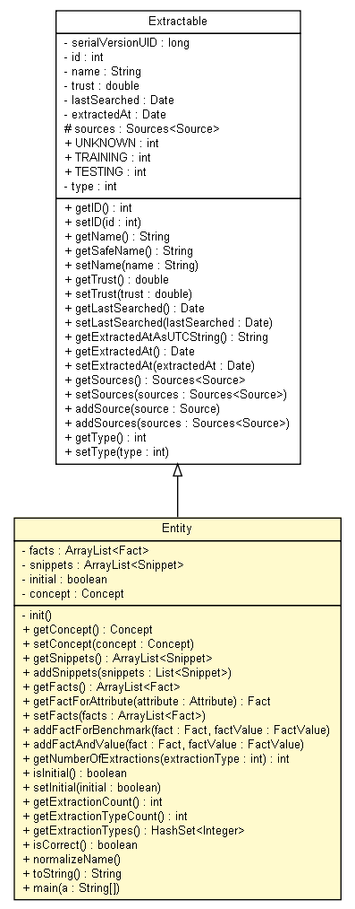

tud.iir.knowledge
Class Entity

java.lang.Object
 tud.iir.knowledge.Extractable
tud.iir.knowledge.Entity
tud.iir.knowledge.Extractable
tud.iir.knowledge.Entity
- All Implemented Interfaces:
- java.io.Serializable
public class Entity
- extends Extractable
The knowledge unit entity.
- See Also:
- Serialized Form
| Methods inherited from class tud.iir.knowledge.Extractable |
addSource, addSources, getExtractedAt, getExtractedAtAsUTCString, getID, getLastSearched, getName, getSafeName, getSources, getTrust, getType, setExtractedAt, setID, setLastSearched, setName, setSources, setTrust, setType |
| Methods inherited from class java.lang.Object |
clone, equals, finalize, getClass, hashCode, notify, notifyAll, wait, wait, wait |
facts
private java.util.ArrayList<Fact> facts
snippets
private java.util.ArrayList<Snippet> snippets
initial
private boolean initial
concept
private Concept concept
Entity
public Entity(java.lang.String name,
Concept concept,
boolean initial)
Entity
public Entity(java.lang.String name,
Concept concept,
double trust)
Entity
public Entity(java.lang.String name,
Concept concept)
init
private void init()
getConcept
public Concept getConcept()
setConcept
public void setConcept(Concept concept)
getSnippets
public java.util.ArrayList<Snippet> getSnippets()
addSnippets
public void addSnippets(java.util.List<Snippet> snippets)
getFacts
public java.util.ArrayList<Fact> getFacts()
getFactForAttribute
public Fact getFactForAttribute(Attribute attribute)
setFacts
public void setFacts(java.util.ArrayList<Fact> facts)
addFactForBenchmark
public void addFactForBenchmark(Fact fact,
FactValue factValue)
addFactAndValue
public void addFactAndValue(Fact fact,
FactValue factValue)
getNumberOfExtractions
public int getNumberOfExtractions(int extractionType)
isInitial
public boolean isInitial()
setInitial
public void setInitial(boolean initial)
getExtractionCount
public int getExtractionCount()
- Return the number of times the entity has been extracted.
- Returns:
- Number of times the entity has been extracted.
getExtractionTypeCount
public int getExtractionTypeCount()
- Return the distinct number extraction types used to extract the entity.
- Returns:
- Number of times the entity has been extracted.
getExtractionTypes
public java.util.HashSet<java.lang.Integer> getExtractionTypes()
- Return a set of the extraction types used to extract the entity.
- Returns:
- Set of extractionTypes used to extract the entity:
isCorrect
public boolean isCorrect()
normalizeName
public void normalizeName()
- Normalize the entity's name.
toString
public java.lang.String toString()
- Overrides:
toString in class java.lang.Object
main
public static void main(java.lang.String[] a)